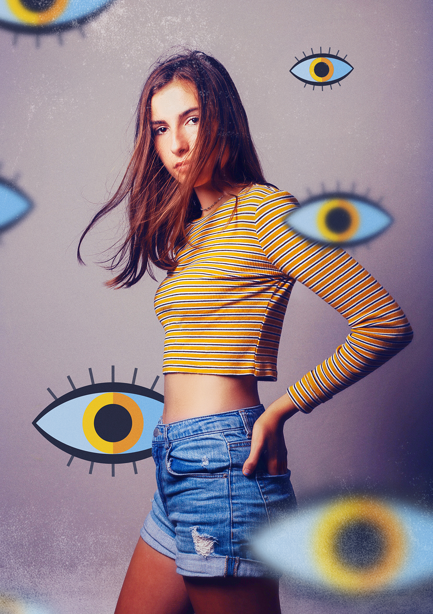

CRÉEZ UNE ŒUVRE D’UN SEUL GESTE
Avec Enlight Photofox, découvrez un moyen fantastique d’exprimer vos talents, et amusez-vous de façon créative avec QuickArts.
Exprimez votre créativité facilement avec une technologie qui vous aide à recréer des effets et des
filtres courants sur Internet.



AUCUNE EXPÉRIENCE PRÉALABLE REQUISE !
Photofox permet de réaliser une photo artistique rapidement avec les filtres QuickArts ou d’ajuster en détail votre retouche photo avec l’éditeur avancé